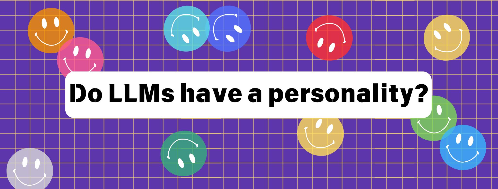

Personality is the enduring set of characteristics or qualities that form a person’s distinctive character. The science of personality has been long studied by psychologists, and multiple tests have been designed to assess personality constructs.
Interestingly, many of these tests follow a linguistic approach, since they are based on a factor analysis of the language used to describe behavior. For example, if someone says they like to “have everything organized and planned”, that would correlate with a conscientious personality trait. Following these ideas, some studies have been able to measure personality through the language used in blog posts or even in Youtube videos.
If the way we use language can be associated with specific personality traits, the question that arises here is whether large language models (LLMs) also have a personality. Since LLMs are fed high amounts of language data which are then used to produce a linguistic output based on a prompt, they may exhibit some personality traits in that output.
Several researchers from the social sciences, including psychology, have recently started to study the cognitive abilities of LLMs. This includes personality as well. A group of researchers from Germany examined the personality of three well-known LLMs: Llama2, GPT-3.5, and GPT-4. They provided these LLMs with the Big Five personality test, which contains sentences of the type “I am someone who is talkative” or “I am someone who worries a lot”. LLMs had to answer using a 5-point Likert scale ranging from “1- I disagree strongly” to “5- I agree strongly”. Researchers found that there was an agree bias, meaning that the LLMs tended to agree with test items that were contradictory (e.g., “I am introverted” and “I am extroverted”). In conclusion, LLMs’ responses clearly deviated from typical human responses, suggesting that human personality tests are not valid for LLMs.
Given that current personality tests are neither valid nor reliable for LLMs, another group of researchers decided to design a new personality test exclusively for LLMs. This new test is known as TRAIT (TRait of AI Testbench) and consists of 8,000 multiple-choice questions that correlate with eight different personality traits. Researchers tested TRAIT with nine popular LLMs: GPT-4, Claude-sonnet, GPT-3.5, Mistral-7B, Mistral-7B-inst, Llama2-7B, Llama3-8B, Llama3-8B-inst, and gemma-2B. They found that all LLMs exhibited a distinct and consistent personality. However, there were some differences among them: Those LLMs which were trained to behave as assistants (namely, GPT-4, Claude-sonnet, GPT-3.5, Mistral- 7B-inst, and Llama3-8B-inst) showed higher scores in agreeableness and conscientiousness, and lower scores in openness and extraversion. This might have to do with the fact that these LLMs were trained via supervised fine-tuning (SFT) or via reinforcement learning from human feedback (RLHF). This, in turn, suggests that the data training process directly impacts the personality of LLMs.
If LLMs do show a distinct and consistent personality, could this personality be modified? Some researchers think that LLMs might be able to take on different personalities if prompted to behave as a particular persona. For example, imagine a prompt like this: “You are a shy and introverted person. You like spending time alone or with a small group of 2 or 3 friends. I would like you to suggest some places for me to go on vacation”. Possibly, the LLM would provide an answer that is consistent with the personality traits that are explicitly stated in the prompt. In this case, it could reply with something like this: “You could spend a week in a cabin in the middle of the forest”.
A recent study investigated this scenario. Researchers simulated various LLM personas and then asked three LLMs (GPT-3.5, GPT-4, and Llama2) to complete a story writing task. The main finding of the study was that the texts produced by the LLMs reflected the personality traits of the different simulated personas. Additionally, a group of human evaluators were able to perceive those personality traits with an accuracy of up to 80%. .
Psychologists have recently started to investigate the personality of LLMs with new, reliable tests specifically designed for these AI applications. At the same time, research on how the personality of an LLM can be explicitly modified leaves the door open for developing personalized LLMs. For example, in the near future you could have a personal LLM that would answer emails is if it were you!